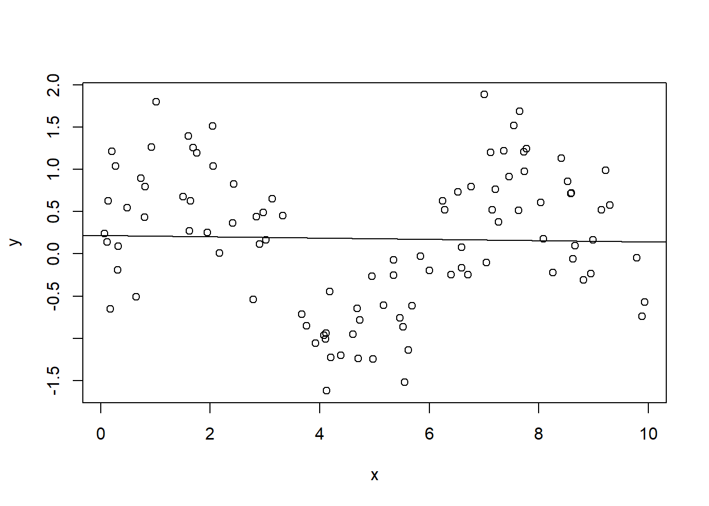

Chapter 13 The t test in the regression
We are now going to perform the test of the hypothesis on the population parameters of a simple bivariate linear regression model. The good news is that this procedure is done automatically by all statistical packages that run regressions. In our case, we are going to replicate the results provided with the output of the \(lm\) function in R.
First, we perform a two-sided t test for the intercept parameter (\(\beta_0\)). We want to test the null hypothesis (\(H_0\)) that \(\beta_0 = 0\) against the alternative hypothesis (\(H_1\)) that \(\beta_0 \neq 0\). This is the kind of hypothesis test that is usually performed by linear regression function in software packages. Since we are interested in a two-sided test, we will take the absolute value of our \(t\) statistic. We want to perform the test at the 5% significance level. We need to find the critical value for a 5% significance level with 524 degrees of freedom. We reject \(H_0\) if \(|t_{\hat{\beta}_0}| > t_{crit}\) otherwise we will fail to reject \(H_0\).
## [1] FALSEWe fail to reject \(H_0\) at the 5% significance level. Consequently, we will fail to reject the \(H_0\) for every significance level smaller than 5%. Which one is the smallest significance level at which we still reject \(H_0\)? We need to calculate the (in)famous p-value. In this case, it is given by \(P(|T| > |t_{\hat{\beta}_0}|)\).15 We can use the function pt to calculate the area below the t distribution at the right of our \(t_{\hat{\beta}_0}\). Don’t forget to multiply this quantity by two as we need the p-value for a two-sided test.
## [1] 18.70735We have a relatively large sample. We know that the t distribution converges to the standard normal distribution as the number of observation in the sample approaches infinity (meaning that the quantiles of the t distribution and the standard normal distribution are the same). Therefore, we can obtain (almost) the same result using the function pnorm.
## [1] 18.64969We can check that we will actually reject \(H_0\) for a significance level larger than our p-value. Let’s try to see what’s happening when the significance level is 20%.16 As before, we reject \(H_0\) if \(|t_{\hat{\beta}_0}| > t_{crit}\) otherwise we will fail to reject \(H_0\).
## [1] TRUEGiven the result of the test, we reject \(H_0\) at the 20% significance level. We can also build a 95% confidence interval for the intercept:17
## [1] -2.250472## [1] 0.4407687Since the value of 0 is contained in the confidence interval, we fail to reject \(H_0\) at 5% significance level. The \(H_0\) is rejected if and only if the value 0 is not contained in the 95% confidence interval. There is no need to repeat all these steps above every time. The confint function allows us to quickly calculate the confidence interval.
## 2.5 % 97.5 %
## (Intercept) -2.250472 0.4407687Now, we perform a two-sided t test for the slope parameter. We want to test the null hypothesis (\(H_0\)) that \(\beta_1 = 0\) against the alternative hypothesis (\(H_1\)) \(\beta_1 \neq 0\). Since we are interested in a two-sided test, we will take the absolute value of our t statistic. As we know, we reject \(H_0\) if \(|t_{\hat{\beta}_1}| > t_{crit}\), otherwise, we fail to reject \(H_0\).
## [1] TRUEWhat is the conclusion of the test? We can reject \(H_0\) that \(\beta_1 = 0\) at the 5% significance level. Can we reject \(H_0\) also at the 1% significance level? We must first calculate the critical value for a 1% significance level with 524 degrees of freedom.
## [1] TRUEWe can reject \(H_0\) that \(\beta_1 = 0\) also at the 1% significance level. We can also build a 95% confidence interval for the slope parameter.
## [1] 0.4367534## [1] 0.6459651Since the value of 0 is not contained in the confidence interval, we reject \(H_0\) at 5% significance level. Also here we can check our result using the confint function.
## 2.5 % 97.5 %
## educ 0.4367534 0.645965113.2 The F test
The F test is used to test whether a group of variables has no effect on the dependent variable. In this sense, the test allows to test if the parameters of a set (or at the limit all) the independent variables are jointly significance. Obviously it is the theory or intuition that tells us to operate such a test on a given group of variables. It is often the case that the F test is performed on all independent variables in a model. It is then said that the test is for the overall significance of the regression. In this exercise, to understand how the F test works in practice, we will replicate the F test provided by the regression function in R (as by any other statistical software packages). This is precisely a test for overall joint significance of the regression. We estimate the following model:
\[wage = \beta_0 + \beta_1educ + \beta_2exper + \beta_3tenure + u\]
We formulate the following joint null hypothesis (\(H_0\)) stating that the regressors have jointly no effect on the dependent variable:
\[H_0 : \beta_1 = \beta_2 = \beta_3 = 0\]
The alternative hypothesis (\(H_1\)) is:
\[H_1 : H_0 \space \text{is not true}\]
The formula for the F statistic (or F ratio), where \(q\) is the number of restrictions (in this example we are imposing three restrictions), and \(n-k-1\) is the number of degrees of freedom of the unrestricted model, is defined by:18
\[F = \frac{SSR_r - SSR_{ur}}{SSR_{ur}} * \frac{(n-k-1)}{q}\]
First, we estimate the unrestricted model. With this term, we mean the entire or complete model:
We can now calculate the sum of squared residual (SSR) of the unrestricted model:
We then estimate the restricted model. The restricted model has clearly less parameters than the unrestricted model. Since we are performing an F test for the overall significance of the regression, we must regress the dependent variable wage on just an intercept. In R, this is done by including only a “1” after the tilde sign in the lm function.
We can now calculate the SSR of the restricted model.
We report the results in a single table created using the stargazer package.
Finally, we can calculate the F statistic and its corresponding p-value. We compare the value of our F statistic (and its p-value) with the value provided by R (see the last row of the first column in the table above).
## [1] 76.87317## [1] 3.405862e-41We choose a significance level (\(\alpha\)) of 1% and calculate the corresponding critical value in the F distribution.
## [1] 3.819327What is the conclusion of the test? We can observe that our F value is clearly larger the critical value for the chosen significance level of 1%. Our p-value is also very very small, certainly smaller than the significance level of 1%. We can therefore soundly reject the null hypothesis that the variables are not jointly significant. We can also create the graph of the F distribution. In green we mark the rejection region for the significance level that we have choosen.

See Wooldridge p. 126.↩︎
Such a large significance level is never used in practice!↩︎
See Wooldridge p. 130.↩︎
The number of degrees of freedom of the unrestricted model is given by \(n-k-1\) where \(n\) is the number of observations, \(k\) is the number of independent variables and \(1\) stands for the coefficient of the intercept.↩︎